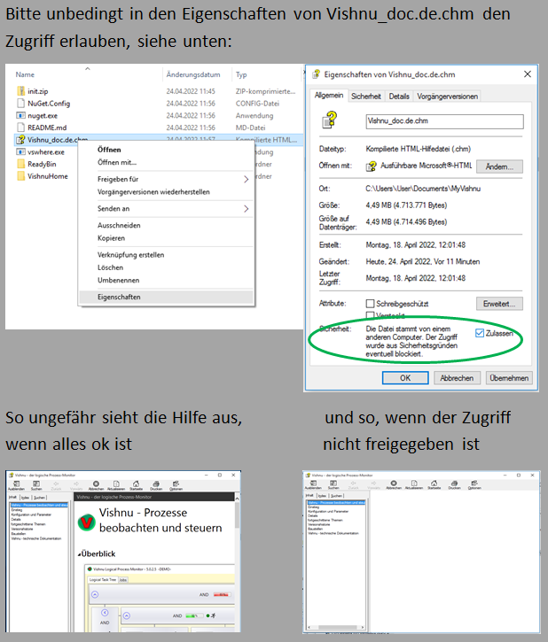

The help file is saved on a network drive.
Solution: copy the file to a local drive.
Windows blocks the content on the right-hand side of the help (the table of contents on the left is displayed, however).
Solution:
Right-click on the CHM file and select "Properties"
Further down there is the item "Security" and the text
"The file originates from another computer. Access may have been blocked for security reasons"
Tick the box next to "Allow".
